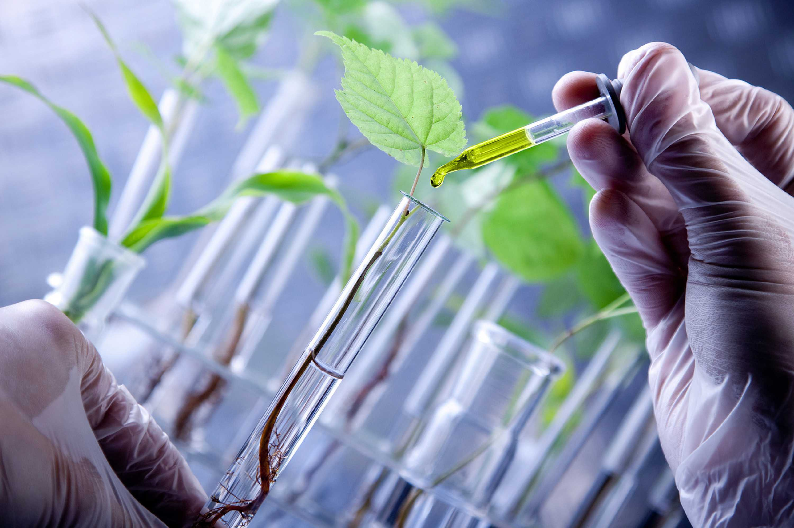

La biotecnología y la genética se utilizan de diversas maneras en diferentes campos de aplicación. Algunas formas de utilizar la biotecnología y la genética son las siguientes: Investigación y desarrollo: La investigación y el desarrollo son fundamentales para la biotecnología y la genética. Se pueden llevar a cabo estudios para investigar nuevas aplicaciones de la biotecnología y la genética en diversas áreas, como la medicina, la agricultura, la energía, el medio ambiente y otros campos. Ingeniería genética: La ingeniería genética se utiliza para modificar organismos vivos, lo que puede tener aplicaciones en la producción de alimentos, la medicina y otras áreas. La ingeniería genética también se utiliza para producir proteínas recombinantes, que se utilizan en la producción de medicamentos. Biotecnología agrícola: La biotecnología se utiliza en la agricultura para mejorar los cultivos y hacerlos más resistentes a enfermedades, pestes, sequías y otros factores ambientales. Los cultivos transgénicos también pueden producir una mayor cantidad de alimentos y aumentar la calidad nutricional de los mismos. Biotecnología médica: La biotecnología se utiliza en la medicina para desarrollar medicamentos y terapias génicas para tratar enfermedades como el cáncer, la diabetes y otras enfermedades crónicas. Biotecnología ambiental: La biotecnología se utiliza para remediar y prevenir la contaminación ambiental, como la biodegradación de residuos y la eliminación de contaminantes en el agua y el aire. Genética forense: La genética forense se utiliza para identificar a individuos a través de análisis de ADN, lo que es útil en la investigación criminal y en la identificación de víctimas de desastres naturales o humanos.
